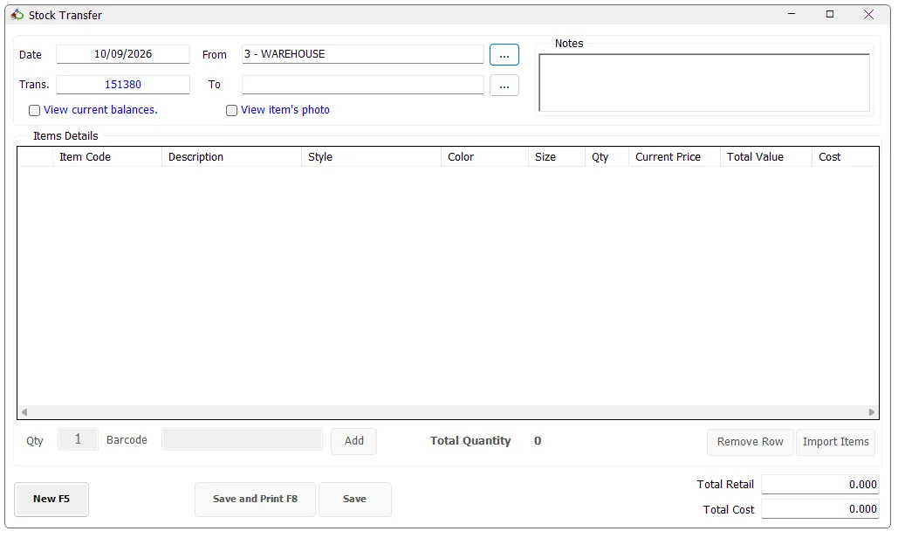

Stock Transfer
Stock Transfer creates an inventory transfer voucher from one IMS store or warehouse to another. Users can scan items, use Item Search, import an item list, verify source quantities, review current balances or product photos, and then save or save-and-print the transfer.

Transfer header
| Field | Purpose |
|---|---|
| Date | Transfer date. IMS uses the current server date. |
| From | The source store or warehouse. The available list depends on the user's transfer permissions. |
| Trans. | The transfer voucher number generated for the source store. |
| To | The destination store. The available list depends on the user's transfer permissions. |
| Notes | Optional remarks stored with the transfer voucher. |
| View current balances | Shows the selected item's on-hand quantity across stores. |
| View item's photo | Shows the image for the selected Style + Color when an image is available. |
Source and destination access
IMS can allow a user to transfer from/to all authorized centers or restrict the user to specifically assigned source and destination stores. The store-selection window therefore shows either the full authorized Centers list or only the user's assigned Transfer From/Transfer To locations.
Select a store and click Select, or double-click the store row. IMS checks that transactions are currently enabled for the selected location before accepting it. The same store cannot be used as both the sender and destination.
When the source store is changed, IMS also generates the next Stock Transfer voucher number for that source location. If the user has no valid source location, IMS does not allow a new Stock Transfer.
The source and destination stores are checked again when the voucher is saved. If an administrator temporarily disables transactions for either location, IMS stops the transfer and displays the affected store.
Add items
After selecting the destination store, enter the required Qty and scan or type the item into the Barcode field, then click Add or press Enter.
The scan field accepts the IMS Item Code, the item's main barcode, or an alternate barcode registered for that item. Only inventory items are accepted.
| Grid information | Meaning |
|---|---|
| Item Code / Description | Identifies the transferred SKU. |
| Style / Color / Size | Product variant information. |
| Qty | Quantity being transferred. |
| Current Price / Total Value | Current retail value of the transfer lines. |
| Cost | Item cost. Cost information is visible only to users authorized to see COGS/cost data. |
Stock availability
IMS compares the requested quantity with the source-store balance. When the quantity is not sufficient, IMS warns the user and normally refuses the item. A store configured to ignore balance can continue according to that store setting.
Items placed On Hold are checked again during Save and cannot be transferred while they remain on hold.
Item Search and Import Items
Press F3 to open Item Search and add items without scanning them. Import Items opens the common IMS Import Items window for loading multiple inventory items from a text file. The Import Items button is shown only to users who have the corresponding import permission.
Using Item Search
Item Search is shared with Sales Transactions and can return the selected Item Code directly to the open Stock Transfer. Search by Item Code, Barcode, Style or Description, then choose the required matching method.
| Option | Effect |
|---|---|
| Source store only | Limits the result to the current Stock Transfer source store. |
| Brand only | When a store/workstation brand is configured, limits the result to that brand. |
| Hide Zeros | Excludes rows whose current store quantity is zero. |
| Get style's details by barcode | Finds the Style from one barcode and shows the related variants/store rows. |
| Show Item's Image | Displays the stored product image for the selected Style + Color when available. |
The result grid shows Item Code, Style, Description, Color, Size, Original Price, Discount, Current Price, Store and Qty. Large searches are loaded in batches and can expose a Load More Rows option.
When the same item appears on consecutive rows for different stores, IMS visually groups the repeated item details: the repeated Item/Style/Description/Color/Size/price cells may appear blank while Store and Qty remain visible. Those blank cells do not mean the item data is missing.
Select the required row and use the shared Add To Invoice action or double-click the row. When Item Search was opened from Stock Transfer, IMS returns that Item Code to the transfer and processes it through the normal Add-item workflow.
Stock Transfer import file format
The Stock Transfer importer reads a tab-delimited text file. The first row is treated as a header and is skipped. Each following row must contain the Item Code and transfer Quantity.
| Column | Required | Meaning |
|---|---|---|
| ItemCode | Yes | IMS inventory Item Code. The item must exist and must be an inventory item. |
| Qty | Yes | Whole-number quantity to import into the transfer. |
ItemCode Qty 30225010001 2 30225010002 1 30225010003 4
Use the … button in the Import Items window to browse for the file, then click Start. The file picker is intended for .txt files.
What IMS validates
Before importing the rows, IMS validates that the file contains data, that every Item Code exists as an inventory item, that the quantity is a valid whole number, and that the input does not contain duplicate item rows. If validation fails, IMS creates an -ErrorLog.txt file next to the import file and opens it for review.
For Stock Transfer, Force System's Prices is always enabled. Imported files therefore do not supply a price column; IMS uses the item's current/original price and cost from the database.
Balance handling during import
By default, IMS checks the source-store balance while loading imported items. If an imported quantity is greater than the available balance and Show Balance Warning is enabled, IMS asks whether to continue with that quantity. If the item does not exist in the selected source store, IMS records it as an import error.
Ignore Store's Balance bypasses the quantity-versus-balance check. When it is selected, the Balance Warning option is disabled because no balance warning is required.
Remove an item
Select one row and click Remove Row. IMS asks for confirmation, removes the row and recalculates Total Quantity, Total Retail and Total Cost.
View current balances
Enable View current balances and select an item row. IMS shows the source store first and then other stores where that item currently has stock. The balance panel updates when another item is selected.
View item's photo
Enable View item's photo and select an item. IMS builds the image key from the item's Style and Color and displays the corresponding product image. If no image has been stored, IMS displays the standard No Image Available image.
Transfer totals
| Total | Meaning |
|---|---|
| Total Quantity | Total number of units on the transfer. |
| Total Retail | Total current retail value of all transfer lines. |
| Total Cost | Total cost value. Hidden when the user is not authorized to see cost information. |
Save or Save and Print
Save records the transfer without printing. Save and Print (F8) saves the same transfer and then prints the Stock Transfer voucher using the workstation's configured printer and copy count.
After a successful save, IMS creates the transfer voucher, updates the inventory balances between the two stores, records the transfer activity and creates the related inventory-cost financial journal entries.
Keyboard shortcuts
| Shortcut | Action |
|---|---|
| F3 | Open Item Search. |
| F5 | Start a new Stock Transfer. |
| F8 | Save and Print when the transfer is ready. |
| Enter in Barcode | Add the entered/scanned item using the current Qty. |
Start a new transfer
Click New (F5) to clear the current voucher and obtain a new transfer number. If unsaved items already exist, IMS asks for confirmation before cancelling them.
Changing the From store while a voucher contains items also requires confirmation because the current item list will be cleared.
Relationship with Replenishment
Stock Transfer can also be opened directly from the Replenishment workflow. In that case the source, destination and suggested items are supplied by Replenishment, the store selectors are locked, and the transfer notes identify the voucher as a replenishment transfer.
Grid layout
IMS remembers the Stock Transfer grid's column visibility/layout when the form closes. Restricted cost/internal columns remain protected according to the user's permissions.